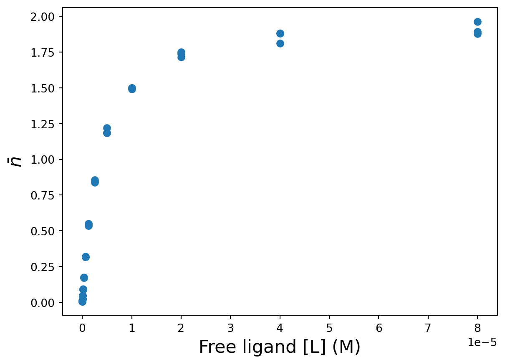
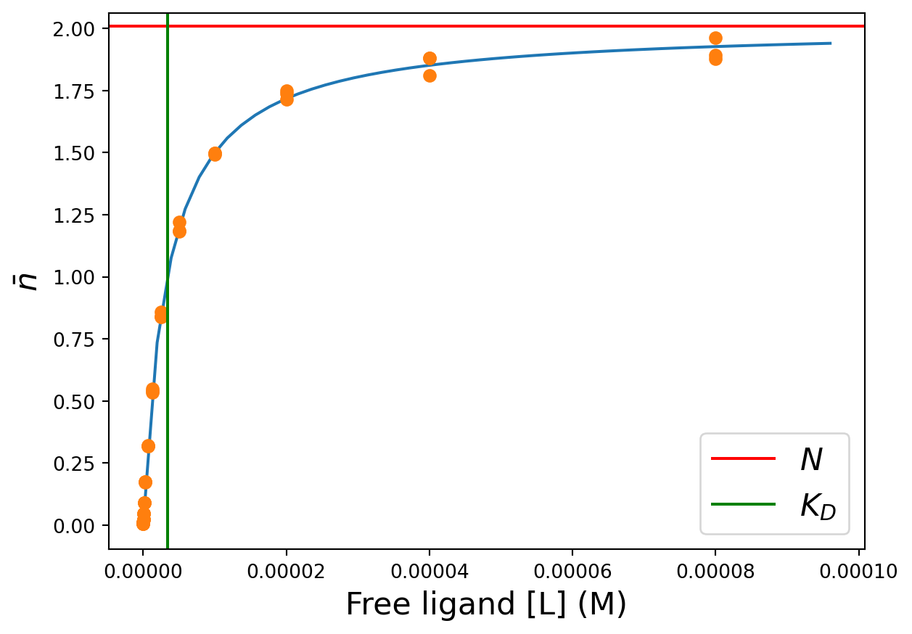
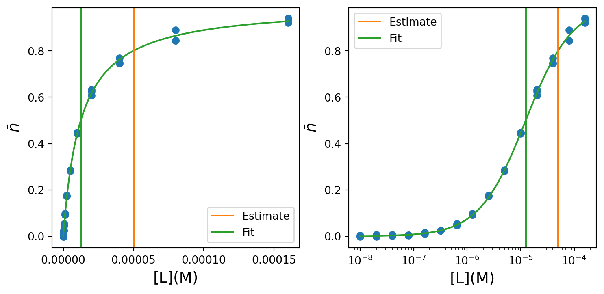
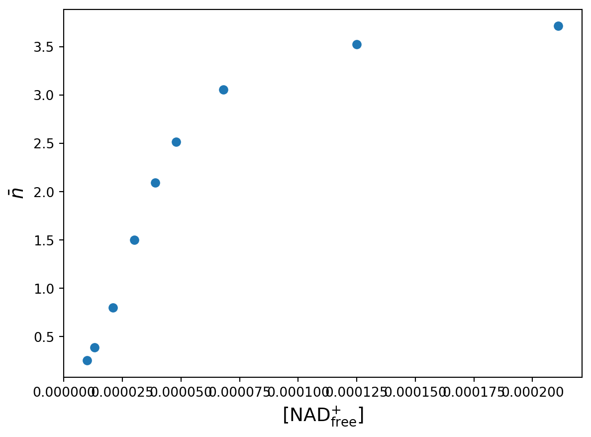
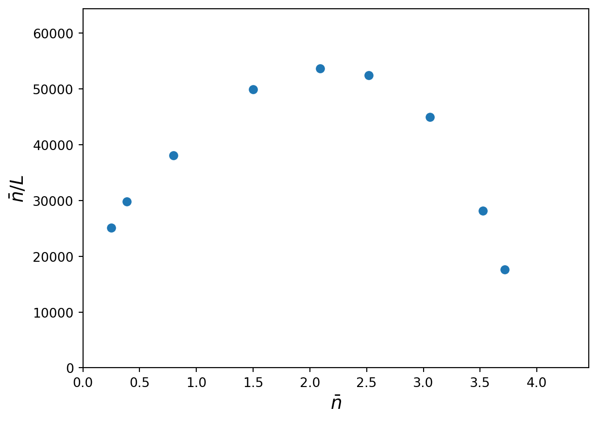
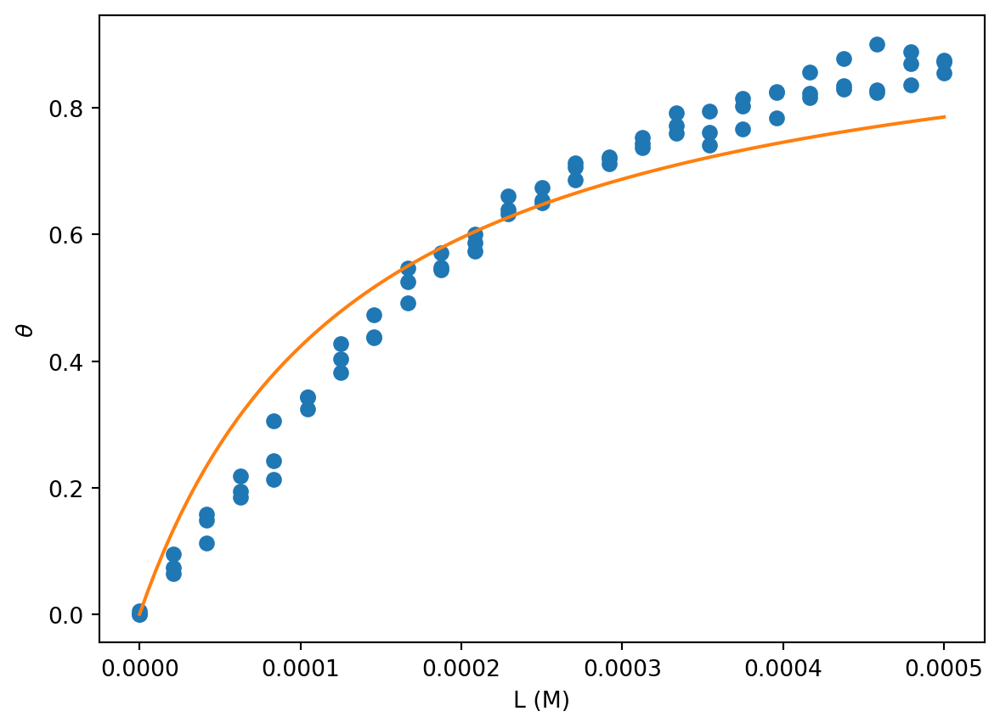
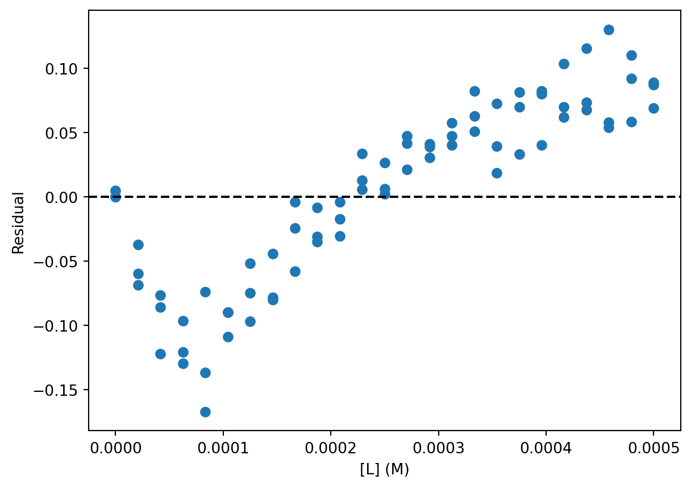
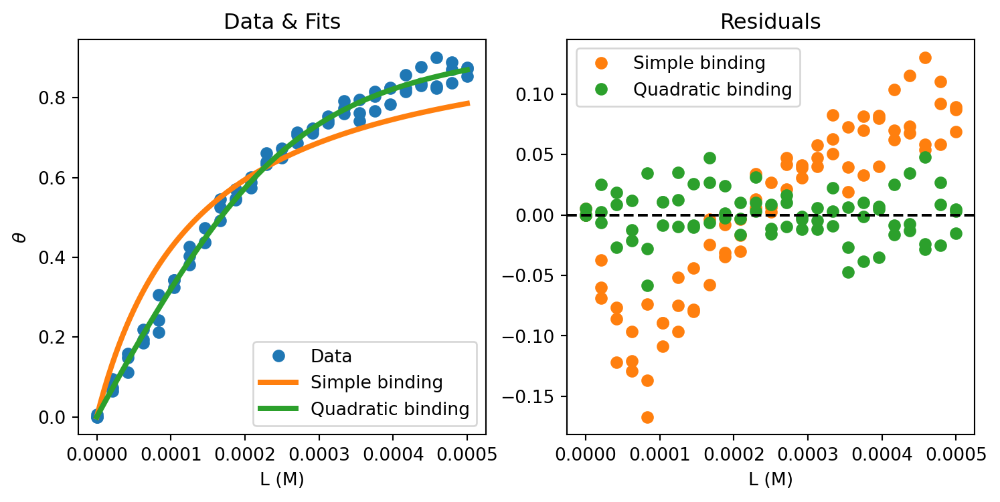
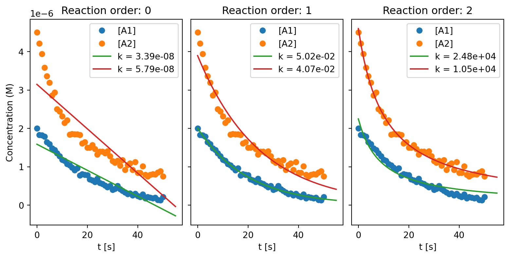
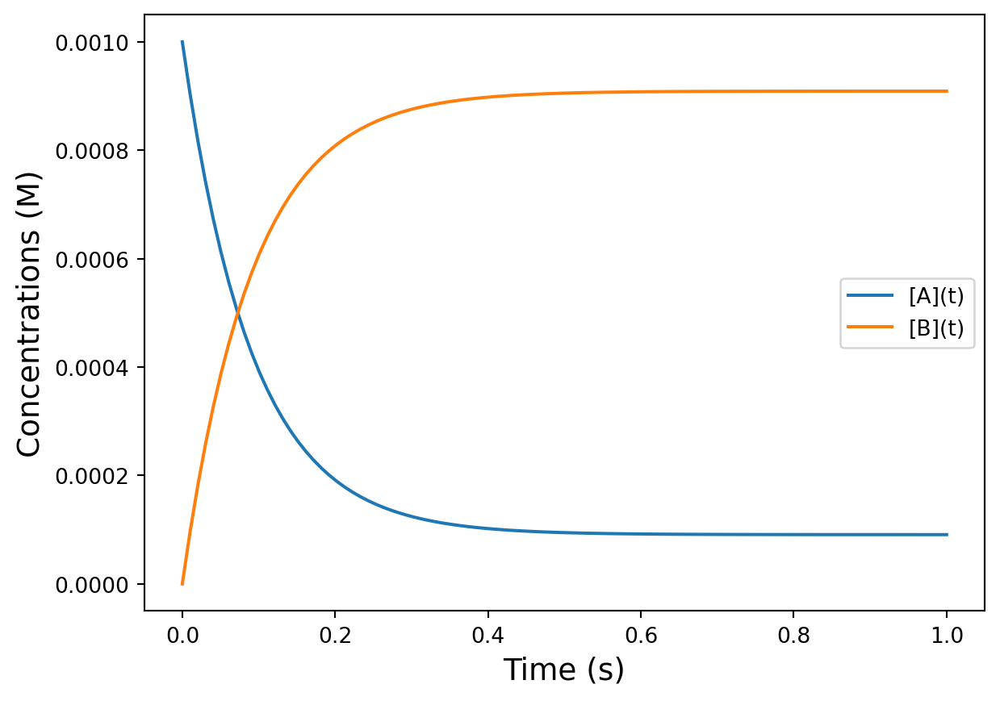

Code
try:
import fysisk_biokemi
print("Already installed")
except ImportError:
%pip install -q "fysisk_biokemi[pyodide] @ https://au-mbg.github.io/fysisk-biokemi/wheels/fysisk_biokemi-0.2.2-py3-none-any.whl"try:
import fysisk_biokemi
print("Already installed")
except ImportError:
%pip install -q "fysisk_biokemi[pyodide] @ https://au-mbg.github.io/fysisk-biokemi/wheels/fysisk_biokemi-0.2.2-py3-none-any.whl"Train your estimation skills using the widget below.
from fysisk_biokemi.widgets.utils.colab import enable_custom_widget_colab
from fysisk_biokemi.widgets import estimate_kd
enable_custom_widget_colab()
estimate_kd()The widget below shows the curves for \(\theta\) using both the simple expression assuming that \(L = L_{tot}\) and the quadratic binding expression. Vary \(K_D\) and \(P_{total}\) to work out a rule of thumb for when the two equations give a similar curve.
from fysisk_biokemi.widgets.utils.colab import enable_custom_widget_colab
from fysisk_biokemi.widgets import visualize_simple_vs_quadratic
enable_custom_widget_colab()
visualize_simple_vs_quadratic()answer = "They are equal when P_tot << K_D"import numpy as np
import matplotlib.pyplot as plt
import pandas as pd
from IPython.display import display
pd.set_option('display.max_rows', 6)A dialysis experiment was set up where equal amounts of a protein were separately dialyzing against buffers containing different concentrations of a ligand – each measurement was done in triplicate. The average number of ligands bound per protein molecule, \(\bar{n}\) were obtained from these experiments. The corresponding concentrations of free ligand and values are given in dataset dialys-exper.xlsx.
from IPython.display import display
from fysisk_biokemi.datasets import load_dataset
df = load_dataset('dialysis_experiment') # Load from package for the solution so it doesn't require to interact.
display(df)| Free_ligand_(uM) | n_bar | |
|---|---|---|
| 0 | 0.01 | 0.0059 |
| 1 | 0.01 | 0.0059 |
| 2 | 0.01 | 0.0060 |
| ... | ... | ... |
| 39 | 80.00 | 1.8769 |
| 40 | 80.00 | 1.9631 |
| 41 | 80.00 | 1.8930 |
42 rows × 2 columns
Explain how the values of \(\bar{n}\) is calculated when knowing the concentrations of ligand inside and outside the dialysis bag, as well as the total concentration of the protein, [\(\text{P}_{\text{tot}}\)].
The concentration of free ligand [L] is the same inside and outside the dialysis bag at equilibrium. Outside there is no protein, so only free ligand \(L_{outside} = [L]\)
The total concentration of ligand inside the dialysis bag is thus the combination of free and bound ligand \(L_{inside} = [L] + [PL]\). [PL] can thus be calculated as:
\[[PL] = [L_{inside}] - [L_{outside}]\]
This can be combined with \([P_{tot}]\) to give \(\bar{n}\):
\[\bar{n} = \frac{[L_{inside}] - [L_{outside}]}{[P_{tot}]}\]
Convert the concentrations of free ligand to SI-units given in M, add it as a row to the DataFrame.
df['Free_ligand_(M)'] = df['Free_ligand_(uM)'] * 10**(-6)
display(df)| Free_ligand_(uM) | n_bar | Free_ligand_(M) | |
|---|---|---|---|
| 0 | 0.01 | 0.0059 | 1.000000e-08 |
| 1 | 0.01 | 0.0059 | 1.000000e-08 |
| 2 | 0.01 | 0.0060 | 1.000000e-08 |
| ... | ... | ... | ... |
| 39 | 80.00 | 1.8769 | 8.000000e-05 |
| 40 | 80.00 | 1.9631 | 8.000000e-05 |
| 41 | 80.00 | 1.8930 | 8.000000e-05 |
42 rows × 3 columns
fig, ax = plt.subplots()
## Your task: Plot the raw data
## With the ligand concentration df['Free_ligand_(M)'] on the x-axis
## And with n-bar df['n_bar'] on the y-axis.
ax.plot(df['Free_ligand_(M)'], df['n_bar'], 'o')
## EXTRAS: You do not need to understand this ##
## This adds customization ##
ax.set_xlabel('Free ligand [L] (M)', fontsize=16)
ax.set_ylabel(r'$\bar{n}$', fontsize=16);
Now we want to fit the data to extract \(K_D\) and \(n\), by using the equation
\[ \bar{n}([L_{\text{free}}]) = N \frac{[L_{\text{free}}]}{K_D + [L_{\text{free}}]} \]
To do so we need to implmenet it as a Python function
def nbar(L, N, K_D):
return N * L / (K_D + L)
## This calculates the function and prints for two different sets of values ##
print(nbar(1, 1, 1)) # Should give 1/2
print(nbar(21, 47, 2.5)) # Should give 420.5
42.0Finish the code to perform the fitting in the cell below.
from scipy.optimize import curve_fit
# Choose the variables from the dataframe
x = df['Free_ligand_(M)']
y = df['n_bar']
## Your task: Make initial guesses for the two parameters ##
K_D_guess = 10**(-5)
N_guess = 1
initial_guess = [K_D_guess, N_guess]
## Your task: Give the four arguments in the correct order to make calculate ##
## the fitted parameters ##
fitted_parameters, pcov = curve_fit(nbar, x, y, initial_guess)
# Print the parameters
N_fit, K_D_fit = fitted_parameters
print(fitted_parameters)
print(N_fit)
print(K_D_fit)[2.00882847e+00 3.39599709e-06]
2.008828473002213
3.3959970874778938e-06Are the parameters you find reasonable? How can you tell if they are reasonable by looking at the plot you made earlier?
When we have the fitted parameters we can calculate and plot the function. To do so we make an array of values for the independent variable and use our function to calculate the dependent variable
## This makes 50 equally spaced points ##
L_smooth = np.linspace(0, x.max()*1.2, 50)
## Your task: Calculate the fitted function using the found parameters and L_smooth
nbar_calc = nbar(L_smooth, N_fit, K_D_fit)Now that we calculated the dependent variable we can plot the fit along with the data.
fig, ax = plt.subplots()
## Your task: Plot the fitted function ##
ax.plot(L_smooth, nbar_calc)
## Plots the data ##
ax.plot(df['Free_ligand_(M)'], df['n_bar'], 'o')
## EXTRA: You do not need to understand this ##
## This customizes the plot ##
## It also adds lines indicating the values of n and K_D found ##
ax.axhline(N_fit, color='red', label=r'$N$')
ax.axvline(K_D_fit, color='green', label=r'$K_D$')
ax.set_xlabel('Free ligand [L] (M)', fontsize=16)
ax.set_ylabel(r'$\bar{n}$', fontsize=16)
ax.legend(fontsize=16)
import numpy as np
import pandas as pd
from IPython.display import display
import matplotlib.pyplot as plt
from scipy.optimize import curve_fit
pd.set_option('display.max_rows', 6)The inter-bindin-data.xlsx contains a protein binding dataset.
Load the dataset with pandas. Set data_file_path to the path of the dataset file named above.
from IPython.display import display
from fysisk_biokemi.datasets import load_dataset
df = load_dataset('interpret_week48') # Load from package for the solution so it doesn't require to interact.
display(df)| [L]_(uM) | nbar | |
|---|---|---|
| 0 | 0.01 | -0.001897 |
| 1 | 0.01 | 0.001821 |
| 2 | 0.01 | 0.003624 |
| ... | ... | ... |
| 42 | 160.00 | 0.939608 |
| 43 | 160.00 | 0.937402 |
| 44 | 160.00 | 0.921801 |
45 rows × 2 columns
Add a new column to the DataFrame with the ligand concentration in SI units.
## Your task: Add a column with the concentration in M ##
## Call this column df['[L]_(M)'] ##
## Recall that you can say df['[L]_(M)'] = df["[L]_(uM)"] * XXX ##
## Where XXX is the factor to multiply by. ##
df['[L]_(M)'] = df["[L]_(uM)"] * 10**(-6)
display(df)| [L]_(uM) | nbar | [L]_(M) | |
|---|---|---|---|
| 0 | 0.01 | -0.001897 | 1.000000e-08 |
| 1 | 0.01 | 0.001821 | 1.000000e-08 |
| 2 | 0.01 | 0.003624 | 1.000000e-08 |
| ... | ... | ... | ... |
| 42 | 160.00 | 0.939608 | 1.600000e-04 |
| 43 | 160.00 | 0.937402 | 1.600000e-04 |
| 44 | 160.00 | 0.921801 | 1.600000e-04 |
45 rows × 3 columns
Make plots of the binding data directly with a linear and logarithmic x-axis.
Estimate \(K_D\) by visual inspection of these plots!
# This makes a figure with two axes.
fig, axes = plt.subplots(1, 2)
## We index with [0] to plot in the first axis. ##
## Don't worry about remembering this ##
ax = axes[0]
ax.plot(df['[L]_(M)'], df['nbar'], 'o')
## We index with [1] to plot in the first axis. ##
## Don't worry about remembering this ##
## We will make this a log plot ##
ax = axes[1]
## Your task: Plot the data [L]_(M) vs nbar.
## Same exact code as above
ax = axes[1]
ax.plot(df['[L]_(M)'], df['nbar'], 'o')
ax.set_xscale('log')
## EXTRA: You do not need to understand this ##
## Customization: Adds labels for the axis in both plots.
ax = axes[0]
ax.set_xlabel('[L](M)', fontsize=14)
ax.set_ylabel(r'$\bar{n}$', fontsize=14)
ax = axes[1]
ax.set_xlabel('log [L](M)', fontsize=14)
ax.set_ylabel(r'$\bar{n}$', fontsize=14)Text(0, 0.5, '$\\bar{n}$')
Ths command ax.set_xscale('log') tells matplotlib that we want the x-axis to use a log-scale.
K_D_estimate = 5 * 10**(-5)Make a fit to determine \(K_D\), as always we start by implementing the function to fit with
def n_bar(L, K_D):
## Your task: Implement the function to fit with
## Use your biochemical knowledge to decide which function that is.
return L / (L + K_D)And then we can make the fit
## Your task: Choose the variables from the dataframe ##
x = df['[L]_(M)']
y = df['nbar']
# Initial guess
initial_guess = [K_D_estimate]
## Your task: Finish the curve fitting
fitted_parameters, trash = curve_fit(n_bar, x, y, initial_guess)
# Print the parameters
K_D_fit = fitted_parameters[0]
print(K_D_fit)1.2457934647913883e-05Compare the fitted values with your guess.
## These lines make equally spaced points on a normal linear axis ##
## And on a logarithmic axis. ##
L_smooth = np.linspace(0, df['[L]_(M)'].max(), 100)
L_smooth_log = np.geomspace(df['[L]_(M)'].min(), df['[L]_(M)'].max(), 100)
## Youe task: Evaluate the fitted function with L_smooth and L_smooth_log ##
nbar_fit = n_bar(L_smooth, K_D_fit)
nbar_fit_log = n_bar(L_smooth_log, K_D_fit)Now we can make a plot.
# This makes a figure with two axes.
fig, axes = plt.subplots(1, 2, figsize=(9, 4))
# Index with [0] to plot in the first axis - Linear plot
ax = axes[0]
ax.plot(df['[L]_(M)'], df['nbar'], 'o', color='C0')
ax.plot(L_smooth, nbar_fit, color='C2')
ax.axvline(K_D_estimate, label='Estimate', color='C1')
ax.axvline(K_D_fit, label='Fit', color='C2')
ax.set_xlabel('[L](M)', fontsize=14)
ax.set_ylabel(r'$\bar{n}$', fontsize=14)
ax.legend()
# Index with [1] to plot in the second axis - Log plot.
ax = axes[1]
ax.plot(df['[L]_(M)'], df['nbar'], 'o', color='C0')
ax.plot(L_smooth_log, nbar_fit_log, color='C2')
ax.set_xlabel('[L](M)', fontsize=14)
ax.set_ylabel(r'$\bar{n}$', fontsize=14)
ax.axvline(K_D_estimate, label='Estimate', color='C1')
ax.axvline(K_D_fit, label='Fit', color='C2')
ax.legend()
ax.set_xscale('log')
Based on the value of \(K_D\) found from the fit,
"""
At K_D/9 and 9*K_D.
"""import pandas as pd
import matplotlib.pyplot as plt
import numpy as np
from IPython.display import display
from scipy.optimize import curve_fitThe binding of NAD+ to the protein yeast glyceraldehyde 3-phosphate dehydrogenase (GAPDH) was studied using equilibrium dialysis. The enzyme concentration was 71 μM. The concentration of \([\text{NAD}^{+}_\text{free}]\) and the corresponding values of \(\bar{n}\) were determined with the resulting data found in the dataset deter-type-streng-coope.xlsx.
The dataset consists of three independent repititions of the same experiment.
Load the dataset with pandas. Set data_file_path to the path of the dataset file named above.
from fysisk_biokemi.datasets import load_dataset
df = load_dataset('determination_coop_week48') # Load from package for the solution so it doesn't require to interact.
display(df)| [NAD+free]_(uM) | nbar1 | nbar2 | nbar3 | |
|---|---|---|---|---|
| 0 | 10 | 0.250 | 0.261 | 0.243 |
| 1 | 13 | 0.394 | 0.389 | 0.379 |
| 2 | 21 | 0.802 | 0.801 | 0.797 |
| ... | ... | ... | ... | ... |
| 6 | 68 | 3.056 | 3.020 | 3.091 |
| 7 | 125 | 3.507 | 3.543 | 3.522 |
| 8 | 211 | 3.704 | 3.741 | 3.699 |
9 rows × 4 columns
Start by adding a new column to the DataFrame with the average value of \(\bar{n}\) across the three series
Remember that you can set a new column based on a computation using one or more other columns, e.g.
df['new_col'] = df['col1'] + df['col2']## Your task: Calculate the of the values in the three columns ##
## nbar1, nbar2, nbar3 ##
df['nbar_avg'] = (df['nbar1'] + df['nbar2'] + df['nbar3']) / 3Now also add a column with the ligand concentration in SI units with the column-name [NAD+free]_(M).
## Task: Calculate the ligand concentration in M and ##
## set it as a new column with the name '[NAD+free]_(M)'
df['[NAD+free]_(M)'] = df['[NAD+free]_(uM)'] * 10**(-6)
display(df)| [NAD+free]_(uM) | nbar1 | nbar2 | nbar3 | nbar_avg | [NAD+free]_(M) | |
|---|---|---|---|---|---|---|
| 0 | 10 | 0.250 | 0.261 | 0.243 | 0.251333 | 0.000010 |
| 1 | 13 | 0.394 | 0.389 | 0.379 | 0.387333 | 0.000013 |
| 2 | 21 | 0.802 | 0.801 | 0.797 | 0.800000 | 0.000021 |
| ... | ... | ... | ... | ... | ... | ... |
| 6 | 68 | 3.056 | 3.020 | 3.091 | 3.055667 | 0.000068 |
| 7 | 125 | 3.507 | 3.543 | 3.522 | 3.524000 | 0.000125 |
| 8 | 211 | 3.704 | 3.741 | 3.699 | 3.714667 | 0.000211 |
9 rows × 6 columns
Finally, set the concentration of the GADPH in SI units
## Task: Convert the GADPH concentration to M ##
## Set it to the variable c_gadph ##
## Add a comment about the unit ##
c_gadph = 71 * 10**(-6) # MMake a plot of the average \(\bar{n}\) as a function of \([\text{NAD}^{+}_\text{free}]\).
fig, ax = plt.subplots()
## Your task: Add plot of nbar vs [NAD+_free]_(M)
ax.plot(df['[NAD+free]_(M)'], df['nbar_avg'], 'o')
## EXTRA: You don't need to understand this
## Customization
ax.set_xlabel(r'$[\text{NAD}^{+}_\text{free}]$', fontsize=14)
ax.set_ylabel(r'$\bar{n}$', fontsize=14)
plt.show()
Make a Scatchard plot based on the average \(\bar{n}\).
# Your task: Calculate nbar / L
nbar_over_L = df['nbar_avg'] / df['[NAD+free]_(M)']
fig, ax = plt.subplots()
# Your task: Choose the right things to make a Scatchard plot.
ax.plot(df['nbar_avg'], nbar_over_L, 'o')
## EXTRA: You dont need to understand this.
## Adds customization.
ax.set_xlabel(r'$\bar{n}$', fontsize=14)
ax.set_ylabel(r'$\bar{n}/L$', fontsize=14)
ax.set_xlim([0, df['nbar_avg'].max()*1.2])
ax.set_ylim([0, nbar_over_L.max() * 1.2])
Estimate by eye how many bindings sites GAPDH contains for \(\text{NAD}^{+}\)?
"""
Saturation suggest assumptotic approximation to 4, which seems like the like
intercept of the non-linear scatchard plot.
"""Based on a visual inspection of the plot above, are there in signs of cooperativity? If so, which kind?
"""
Positive cooperativity as witnessed e.g. by the increasing slope in the early
part of the lienar plot
"""Make a fit using the functional form
\[ \bar{n} = N \frac{[L]^h}{K + [L]^h} \]
As usual, start by defining the function in Python
def n_bar(L, N, K, h):
## Your task: Implement the function
# Be careful with parentheses!
result = N * L**h / (K + L**h)
return resultNow we can fit
## We want to use all the data for the fit, but it was given in three different columns.
## We stitch it together to make a column containing all x-coordinates
## And another column containing all y-coordinates
x = np.concatenate([df['[NAD+free]_(M)'], df['[NAD+free]_(M)'], df['[NAD+free]_(M)']])
y = np.concatenate([df['nbar1'], df['nbar2'], df['nbar3']])
## Your task: Make initial guesses for the three parameters
## The order is that of the function
## So N, K and h.
initial_guess = [1, 1, 1]
## Your task: Make the fit
## Note: The bounds argument has been added to have the function
## only explore positive sets of parameters.
fitted_parameters, trash = curve_fit(n_bar, x, y, initial_guess, bounds=(0, np.inf))
# Print the parameters
N_fit, K_fit, h_fit = fitted_parameters
print('N_fit', N_fit)
print('K_fit', K_fit)
print('h_fit', h_fit)N_fit 3.997873553931702
K_fit 5.9798561894818436e-09
h_fit 1.8627077063542798Do the fitted parameters support your intuitive reading of the type of cooperativity?
In the data sets used, repeated experiments were given as a three seperate columns, which is a quite natural way of recording data during an experiment. However, it is not an appropriate format for regression, where we want all the data-points in a single column. In this exercise we did a bit of data wrangling to make the data appropriate for what we want to do with it - in this case by creating a new joint column containing all the data by using the np.concatenate function.
Below is given the general expression for saturation of a binding site by one of the ligands, \(L\), when two ligands \(L\) and \(C\) are competing for binding to the same site on a protein. Assume that \([P_T] = 10^{-9}\) \(\mathrm{M}\).
\[ \theta_L = \frac{[PL]}{[P_T]} = \frac{1}{\frac{K_D}{[L]}\left(1 + \frac{[C]}{K_C}\right) + 1} \]
Consider these four situations
| # | \([L_T]\) | \([C_T]\) | \(K_D\) | \(K_C\) |
|---|---|---|---|---|
| 1 | \(1·10^{-3}\) \(\mathrm{M}\) | \(0\) | \(1·10^{-5}\) \(\mathrm{M}\) | \(1·10^{-6}\) \(\mathrm{M}\) |
| 2 | \(1·10^{-3}\) \(\mathrm{M}\) | \(1·10^{-2}\) \(\mathrm{M}\) | \(1·10^{-5}\) \(\mathrm{M}\) | \(1·10^{-6}\) \(\mathrm{M}\) |
| 3 | \(1·10^{-3}\) \(\mathrm{M}\) | \(1·10^{-3}\) \(\mathrm{M}\) | \(1·10^{-5}\) \(\mathrm{M}\) | \(1·10^{-5}\) \(\mathrm{M}\) |
| 4 | \(1·10^{-5}\) \(\mathrm{M}\) | \(1·10^{-6}\) \(\mathrm{M}\) | \(1·10^{-5}\) \(\mathrm{M}\) | \(1·10^{-6}\) \(\mathrm{M}\) |
Explain how the fact that \([P_T]\) is much smaller than \([L_T]\) and \([C_T]\) simplifies the calculations using the above equation.
"""
When P(total) is << L(total) and C(total), we can assume that L(total) =[L] and C(total) = [C].
"""Calculate the degree of saturation of the protein with ligand \(L\) in the four situations.
Start by writing a Python function that calculates the degree of saturation \(\theta\).
def bound_fraction(L, C, Kd, Kc):
## Your task: Write the equation for binding saturation.
## Be careful with parentheses!
theta = 1 / ((Kd / L)*(1+(C/Kc))+1)
return thetaThen use that function to calculate \(\theta_L\) for each situation.
## Your task: Calculate the degree of saturation for each set of parameters ##
theta_L_1 = bound_fraction(10**(-3), 0, 10**(-5), 10**(-18))
theta_L_2 = bound_fraction(10**(-3), 10**(-2), 10**(-5), 10**(-6))
theta_L_3 = bound_fraction(10**(-3), 10**(-3), 10**(-5), 10**(-5))
theta_L_4 = bound_fraction(10**(-5), 10**(-6), 10**(-5), 10**(-6))
## Prints the results so we can analyze them.
print('Situation 1', theta_L_1)
print('Situation 2', theta_L_2)
print('Situation 3', theta_L_3)
print('Situation 4', theta_L_4)Situation 1 0.9900990099009901
Situation 2 0.0099000099000099
Situation 3 0.49751243781094534
Situation 4 0.3333333333333333What is the degree of saturation with respect to the competitor \(C\) in #1, #2, #3 and #4?
## Your task: Calculate the degree of saturation for each set of parameters ##
## Note: Now you are calculating it for the competitor!
theta_C_1 = 0 # [C] = 0
theta_C_2 = bound_fraction(10**(-2), 10**(-3), 10**(-6), 10**(-5))
theta_C_3 = bound_fraction(10**(-3), 10**(-3), 10**(-5), 10**(-5))
theta_C_4 = bound_fraction(10**(-6), 10**(-5), 10**(-6), 10**(-5))
## Prints the results so we can analyze them.
print('Situation 1', theta_C_1)
print('Situation 2', theta_C_2)
print('Situation 3', theta_C_3)
print('Situation 4', theta_C_4)Situation 1 0
Situation 2 0.99000099000099
Situation 3 0.49751243781094534
Situation 4 0.3333333333333333What is the fraction of \([P_{\mathrm{free}}]\) in #1, #2, #3 and #4?
Consider how to express the fraction of \([P_{\mathrm{free}}]\) in terms of theta_L_X and theta_C_X.
theta_free_1 = 1 - (theta_L_1 + theta_C_1)
theta_free_2 = 1 - (theta_L_2 + theta_C_2)
theta_free_3 = 1 - (theta_L_3 + theta_C_3)
theta_free_4 = 1 - (theta_L_4 + theta_C_4)
## Prints the results so we can analyze them.
print('Situation 1', theta_free_1)
print('Situation 2', theta_free_2)
print('Situation 3', theta_free_3)
print('Situation 4', theta_free_4)Situation 1 0.00990099009900991
Situation 2 9.900009900010165e-05
Situation 3 0.004975124378109319
Situation 4 0.33333333333333337Describe in your own words why these four competitive situations end up with their respective binding patterns. Consider the relative concentrations and affinities of ligands L and C.
"""
1. The competitor concentration is zero, so only the ligand L binds. Affinity/concentration is such that nearly all proteins have an L-ligand bound.
2. The affinity and concentration of C is higher so it binds more and the ratio of affinity and concentration is high enough that nearly all proteins have a C-ligand bound.
3. The affinity and concentration of L and C are equal and they both bind equally. Again, the affinities/concentrations are such that nearly all proteins have a ligand bound.
4. K_D > K_C with the same factor as [L_T] > [C_T] so they bind equally but
there are still free proteins as the concentrations are low relative to the affinities.
"""import numpy as np
import matplotlib.pyplot as plt
import pandas as pd
from scipy.optimize import curve_fit
from IPython.display import display
pd.set_option('display.max_rows', 6)Here, we will analyse the results from an experiment used to quantify affinity of a protein:lignd interaction. The data in binding_data_sq.xlsx is in the form of saturation (theta) as a function of the total ligand concentration L_tot. This is the type of data you typically get from e.g. a fluorescence titration experiment. Each measure-ment has been repeated three times.
Load the dataset with pandas. Set data_file_path to the path of the dataset file named above.
from fysisk_biokemi.datasets import load_dataset
df = load_dataset('binding_data_sq') # Load from package for the solution so it doesn't require to interact.
display(df)| L_(uM) | theta | |
|---|---|---|
| 0 | 0.0 | 0.000000 |
| 1 | 0.0 | 0.005258 |
| 2 | 0.0 | 0.000000 |
| ... | ... | ... |
| 72 | 500.0 | 0.875167 |
| 73 | 500.0 | 0.873289 |
| 74 | 500.0 | 0.854871 |
75 rows × 2 columns
Convert the ligand concentration to \(\mathrm{M}\) and add it to the dataframe as a new column named 'L_(m)'.
You can use display(df) to check if you have been successful.
df['L_(M)'] = df['L_(uM)'] * 10**(-6)
display(df)| L_(uM) | theta | L_(M) | |
|---|---|---|---|
| 0 | 0.0 | 0.000000 | 0.0000 |
| 1 | 0.0 | 0.005258 | 0.0000 |
| 2 | 0.0 | 0.000000 | 0.0000 |
| ... | ... | ... | ... |
| 72 | 500.0 | 0.875167 | 0.0005 |
| 73 | 500.0 | 0.873289 | 0.0005 |
| 74 | 500.0 | 0.854871 | 0.0005 |
75 rows × 3 columns
Make a scatter plot of the dataset and use the plot to estimate \(K_D\).
fig, ax = plt.subplots()
## Your task: Make a scatter plot (just points, no lines) of the data. ##
ax.plot(df['L_(M)'], df['theta'], 'o')
## EXTRA: ##
## This adds x and y-axis labels. ##
ax.set_xlabel('L (M)')
ax.set_ylabel(r'$\theta$')
plt.show()
Put your estimate of \(K_D\) in the cell below
## Your task: Assign your estimate of K_D to the variable below ##
K_D_estimate = 0.0001Fit the data using the simple binding expression
\[ \theta = \frac{[L]}{[L] + K_D} \]
Start by defining a function, called simple_binding, that calculates this expression
## Your task: Define the function simple_binding that evaluates the equation ##
## from above. ##
def simple_binding(L, K_D):
theta = L / (L + K_D)
return thetaThen use that function to fit the data using curve_fit
## Your task: Set your estimate of K_D as the inital guess.
initial_guess = [K_D_estimate]
## Your task: Use curve_fit to find the fitted value of K_D
fitted_parameters, trash = curve_fit(simple_binding, df['L_(M)'], df['theta'], initial_guess)
## This extracts K_D and prints it ##
K_D_fit_simple = fitted_parameters[0]
print(K_D_fit_simple)0.00013628483915769865And evaluate the fit and plot it together with the dataset
## Your task: Evaluate simple_binding using L_smooth and the value of K_D from your fit ##
L_smooth = np.linspace(0, 0.0005, 100)
theta_fit_simple = simple_binding(L_smooth, K_D_fit_simple)
fig, ax = plt.subplots()
## Your task: Plot the fit as line plot and the data as a scatter plot. ##
ax.plot(df['L_(M)'], df['theta'], 'o')
ax.plot(L_smooth, theta_fit_simple)
## EXTRA:
## Labels for the axis.
ax.set_xlabel('L (M)')
ax.set_ylabel(r'$\theta$')
plt.show()
Is it a good fit?
To get a more quantitative view of the quality of the fit calculate residuals
theta_model = simple_binding(df['L_(M)'], K_D_fit_simple)
residuals_simple = df['theta'] - theta_modelAnd plot them versus the measured \(\mathrm{[L]}\)
fig, ax = plt.subplots()
## Your task: Make a plot with residuals on the y-axis and L on the x-axis ##
ax.plot(df['L_(M)'], residuals_simple, 'o')
## This makes a horizontal line through 0 ##
ax.axhline(0, color='black', linestyle='--')
## EXTRA
## Adds axis labels.
ax.set_xlabel('[L] (M)')
ax.set_ylabel('Residual')Text(0, 0.5, 'Residual')
Are the residuals randomly distributed around zero? What does this tell you about the quality of the fit?
The protein concentration in the above titrations was 250 uM. Formulate a hypothesis for why the fit fails.
The assumption made to derive the simple binding model is that the ligand concentration is much larger than the protein concentration such that the \([L_\mathrm{free}] \approx [L_\mathrm{total}]\) - or in other words that the number of ligand molecules bound to the proteins are not a significant proportion of the total number of ligand molecules. With \([P] = 250 \ \mu\textrm{M}\) and ligand concentrations in the range of 0 to 500 \(\mu\mathrm{M}\) this assumption is not valid.
Next, we will try a fitting model that explicitly considers the concentration of the protein being titrated. This is known as the quadratic binding equation
\[ \begin{aligned} \theta &= \frac{K_D + [P_{tot}] + [L_{tot}]}{2[P_{tot}]} - \sqrt{\left(\frac{K_D + [P_{tot}] + [L_{tot}]}{2[P_{tot}]}\right)^2 - \frac{[L_{tot}]}{[P_{tot}]}} \\ \end{aligned} \]
The value of \([P_{tot}]\) is \(250 \ \mu\mathrm{M}\).
Start by implementing the expression as a Python function - remember that you need to be careful with parentheses with a function like this.
def quadratic_binding(L, K_D):
## Your task: Set the protein concentration in appropriate units. ##
P_tot = 250 * 10**(-6)
## Your task: Implement the quadratic binding equation ##
## Be careful with parentheses! ##
theta = (K_D + P_tot + L) / (2 * P_tot) - np.sqrt(((K_D + P_tot + L) / (2 * P_tot))**2 - L / P_tot)
return theta
print(f"{quadratic_binding(100, 138.09) = :.3f}") # Should give 0.420quadratic_binding(100, 138.09) = 0.420And now make a fit using this expression
## Your task: Make a fit using the quadratic binding equation. ##
fitted_parameters, trash = curve_fit(quadratic_binding, df['L_(M)'], df['theta'])
## Extratcs and prints K_D ##
K_D_fit_quad = fitted_parameters[0]
print(K_D_fit_quad)4.214239381928562e-05The cell below makes a figure of the data and the residuals for each fit. You are not expected to understand every line of code – the figure is mainly to aid you interpretation of the data and show case how you can make beautiful figures from you own data later on.
theta_fit_quad = quadratic_binding(L_smooth, K_D_fit_quad)
residuals_quad = df['theta'] - quadratic_binding(df['L_(M)'], K_D_fit_quad)
fig, axes = plt.subplots(1, 2, figsize=(9, 4))
# Data & Fit
ax = axes[0]
ax.plot(df['L_(M)'], df['theta'], 'o', label='Data')
ax.plot(L_smooth, theta_fit_simple, label='Simple binding', linewidth=3)
ax.plot(L_smooth, theta_fit_quad, label='Quadratic binding', linewidth=3)
ax.set_xlabel('L (M)')
ax.set_ylabel(r'$\theta$')
ax.set_title('Data & Fits')
ax.legend()
# Residuals
ax = axes[1]
ax.plot(df['L_(M)'], residuals_simple, 'o', color='C1', label='Simple binding')
ax.plot(df['L_(M)'], residuals_quad, 'o', color='C2', label='Quadratic binding')
ax.axhline(0, color='black', linestyle='--')
ax.set_title('Residuals')
ax.set_xlabel('L (M)')
ax.legend()
plt.show()
Consider the following questions:
import matplotlib.pyplot as plt
import numpy as np
import pandas as pd
from scipy.optimize import curve_fit
from IPython.display import display
pd.set_option('display.max_rows', 6)You have carried out a kinetic experiment investigating the turnover of two metabolites, A1 and A2, in a cell lysate. For each metabolite, you have measured the concentration of the compound as a function of time using UV-Vis spectroscopy aiming to determine the reaction order, and thus deduce something about the reaction mechanism by which they are processed. The date from this experiment is found in reaction-orders.xlsx.
Load the dataset reaction-orders.xlsx with pandas. Set data_file_path to the path of the dataset file.
from fysisk_biokemi.datasets import load_dataset
df = load_dataset('reaction_order_week48') # Load from package for the solution so it doesn't require to interact.
display(df)| Time_s | A1_uM | A2_uM | |
|---|---|---|---|
| 0 | 0.0 | 2.000000 | 4.500000 |
| 1 | 1.0 | 1.833259 | 4.212598 |
| 2 | 2.0 | 1.823775 | 3.939486 |
| ... | ... | ... | ... |
| 48 | 48.0 | 0.136936 | 0.854009 |
| 49 | 49.0 | 0.132587 | 0.885128 |
| 50 | 50.0 | 0.212870 | 0.752202 |
51 rows × 3 columns
Add two new columns with the concentrations given in M.
df['A1_M'] = df['A1_uM'] * 10**(-6)
df['A2_M'] = df['A2_uM'] * 10**(-6)
display(df)| Time_s | A1_uM | A2_uM | A1_M | A2_M | |
|---|---|---|---|---|---|
| 0 | 0.0 | 2.000000 | 4.500000 | 2.000000e-06 | 4.500000e-06 |
| 1 | 1.0 | 1.833259 | 4.212598 | 1.833259e-06 | 4.212598e-06 |
| 2 | 2.0 | 1.823775 | 3.939486 | 1.823775e-06 | 3.939486e-06 |
| ... | ... | ... | ... | ... | ... |
| 48 | 48.0 | 0.136936 | 0.854009 | 1.369359e-07 | 8.540093e-07 |
| 49 | 49.0 | 0.132587 | 0.885128 | 1.325872e-07 | 8.851275e-07 |
| 50 | 50.0 | 0.212870 | 0.752202 | 2.128700e-07 | 7.522017e-07 |
51 rows × 5 columns
For each reactant make a plot of the concentration versus time.
fig, ax = plt.subplots()
## Your task: Make plots of concentration (y) versus time (x). ##
## Hint: ax.plot(x_data, y_data, 'o') to make a scatter plot. ##
ax.plot(df['Time_s'], df['A1_M'], 'o')
ax.plot(df['Time_s'], df['A2_M'], 'o')
## EXTRA: Customization of axis labels ##
ax.set_xlabel('Time [s]')
ax.set_ylabel('Concentration')Text(0, 0.5, 'Concentration')
We will model the reactions as zeroth, first and second order. We will consider both the the rate constant \(k\) and the concentration at time \(t = 0\) parameters of the fit.
def zeroth_order(t, k, A0):
## Your task: Implement the zeroth order rate equation ##
result = A0 - k*t
return result
def first_order(t, k, A0):
## Your task: Implement the first order rate equation ##
result = A0 * np.exp(-k*t)
return result
def second_order(t, k, A0):
## Your task: Implement the second order rate equation ##
result = A0 / (1 + 2*k*t*A0)
return result
## Use these to check that your functions are correct!
print('zeroth_order', zeroth_order(1, 1, 2)) # Should give 1
print('first_order', first_order(1, 1, 2)) # Should give 0.7357...
print('second_order', second_order(1, 1, 2)) # Should give 0.4zeroth_order 1
first_order 0.7357588823428847
second_order 0.4Then we can make a fit to measurements of each reactant.
## Your task: Pick a rate equation and assign it to the variable rate_equation
## You can change this to first_order or second_order
## Do not call the function - so no (...) just assign it to the variable.
rate_equation = zeroth_order
## Your task: Make a fit of the A1_M data with 'rate_equation'.
fitted_parameters_A1, trash = curve_fit(rate_equation, df['Time_s'], df['A1_M'])
k_A1_fit = fitted_parameters_A1[0]
A1_0_fit = fitted_parameters_A1[1]
## Your task: Make a fit of the A2_M with 'rate_equation'.
fitted_parameters_A2, trash = curve_fit(rate_equation, df['Time_s'], df['A2_M'])
k_A2_fit = fitted_parameters_A2[0]
A2_0_fit = fitted_parameters_A2[1]
## Prints the found parameters
print(k_A1_fit)
print(A1_0_fit)
print(k_A2_fit)
print(A2_0_fit)3.390184293164445e-08
1.5887604659704164e-06
5.786947687397643e-08
3.148604267116672e-06Now that we fitted the data using one of the rate equations, we can plot to see how well it fits
fig, ax = plt.subplots()
## Your task: Finish the code to calculate the fit for A2.
t_smooth = np.linspace(0, 55)
A1_fit = rate_equation(t_smooth, k_A1_fit, A1_0_fit)
A2_fit = rate_equation(t_smooth, k_A2_fit, A2_0_fit)
## Your task: Plot the fits
ax.plot(t_smooth, A1_fit)
ax.plot(t_smooth, A2_fit)
## Plots the data ##
ax.plot(df['Time_s'], df['A1_M'], 'o')
ax.plot(df['Time_s'], df['A2_M'], 'o')
## EXTRA: Customization of axis labels ##
ax.set_xlabel('Time [s]')
ax.set_ylabel('Concentration')Text(0, 0.5, 'Concentration')
Once you’ve finished the fitting with one of the rate equations you can go back and change the rate_equation variable to try one of the others.
The cell below makes a plot for each rate law in the same panel using your defined rate equations.
from fysisk_biokemi.utils.deter_reacti_orders import make_plot
rate_laws = {0: zeroth_order, 1: first_order, 2: second_order}
make_plot(df, rate_laws)
Based on this plot;
The first order rate equation is
\[ A_0 \cdot \exp({-k\cdot t}) \]
The term in the exponential has to be unitless, so we need \(k\) to have the inverse units of \(t\)
\[ k \rightarrow \frac{1}{t} \rightarrow \frac{1}{\text{s}} \]
The integrated second order rate is
\[ \frac{A_0}{1 + 2\cdot k \cdot t \cdot A_0} \]
Looking at the denominator it includes the term \[ 1 + 2\cdot k \cdot t \cdot A_0 \] For this addition to make sense the second term needs to be unitless, so we have can conclude that the unit of \(k\) must cancel those of \(t \cdot A_0\), so
\[ k \rightarrow \frac{1}{t \cdot A_0} \rightarrow \frac{1}{\text{s} \cdot \text{M}} \]
What does the above tell you about the reaction mechanism whereby the two compounds disappear from the lysate?
import matplotlib.pyplot as plt
import numpy as npConsider the following reaction
\[ A \underset{k_{2}}{\stackrel{k_1}{\rightleftharpoons}} B \]
The magnitudes of the rate constants are \(k_1 = 10 \ \mathrm{s}^{-1}\) and \(k_2 = 1 \ \mathrm{s}^{-1}\).
What is the reaction order in each direction?
Two perspectives
From the chemical equation: Each elementary step involves only one reactant molecule:
Since each step involves a single reactant, both are first-order reactions.
From the units: The rate constants have units of \(\mathrm{s}^{-1}\), which is the unit of first order reactions.
Show mathematically how the equilibrium constant \(K_{\mathrm{eq}}\) is given by the ratio between the two rate constants.
At equilibrium, the forward and reverse reaction rates are equal:
\[r_{\text{forward}} = r_{\text{reverse}}\]
For the reaction \(A \rightleftharpoons B\), both are first order as discussed above:
Setting them equal: \[k_1[A]_{\text{eq}} = k_2[B]_{\text{eq}}\]
Rearranging to solve for the ratio of concentrations: \[\frac{[B]_{\text{eq}}}{[A]_{\text{eq}}} = \frac{k_1}{k_2}\]
By definition, the equilibrium constant is: \[K_{\text{eq}} = \frac{[B]_{\text{eq}}}{[A]_{\text{eq}}}\]
Therefore: \[K_{\text{eq}} = \frac{k_1}{k_2}\]
## Your task: Assign known values & calculate the equilibrium constant.
k1 = 10
k2 = 1
K_eq = k1 / k2
print(K_eq)10.0Calculate the concentrations of A and B at equilibrium, \([\mathrm{A}]_{\mathrm{eq}}\) and \([\mathrm{B}]_\mathrm{eq}\), if \([\mathrm{A}]_0 = 10^{-3} \text{M}\)
A0 = 10**(-3)
A_eq = (k2 * A0) / (k1 + k2)
B_eq = (k1 * A0) / (k1 + k2)
print(A_eq)
print(B_eq)9.090909090909092e-05
0.0009090909090909091If \([\mathrm{A}]_0 = 10^{-3} \ \text{M}\) and \([\mathrm{B}]_0 = 0 \ \text{M}\), calculate the initial rate of formation of B.
## Your task: Calculate initial rate of formation of B
r_fwd = A0 * k1
print(r_fwd)0.01
We now want to calculate and plot the time-dependent concentrations using the above equations.
In the cell below finish the implementation of the function A_time that calculates the concentration [A] as a function of time.
## Your task: Implement the function to calculate the time dependent concentration.
## Be careful with parentheses.
def A_time(t, A0, k_f, k_b):
A_t = (k_b + k_f * np.exp(-(k_f+k_b)*t)) / (k_f + k_b) * A0
return A_t
test = A_time(1, 1, 1, 1)
print(test) # This should give 0.567...0.5676676416183064And then we can use that function to calculate and plot the concentrations as a function of time. As you have seen above, the reaction is pretty fast, so we will just focus on the first second
fig, ax = plt.subplots()
t = np.linspace(0, 1, 100)
## Your task: Calculate [A](t) and [B](t) ##
At = A_time(t, A0, k1, k2)
Bt = A0 - At
## Plots the concentrations versus time.
ax.plot(t, At, label='[A](t)')
ax.plot(t, Bt, label='[B](t)')
## EXTRA: Sets x and y-axis labels.
ax.set_ylabel('Concentrations (M)', fontsize=14)
ax.set_xlabel('Time (s)', fontsize=14)
ax.legend()